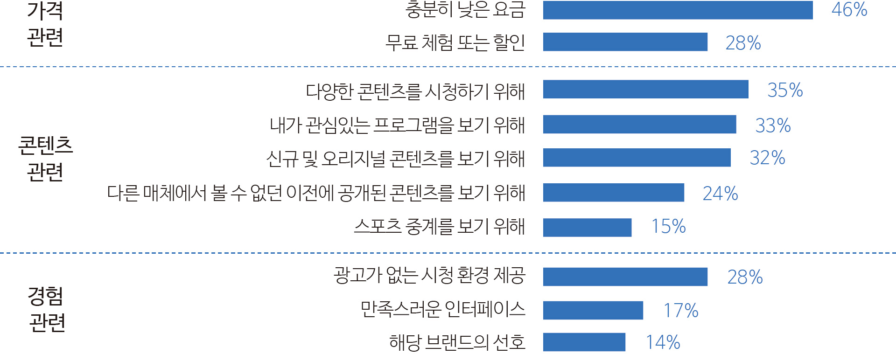
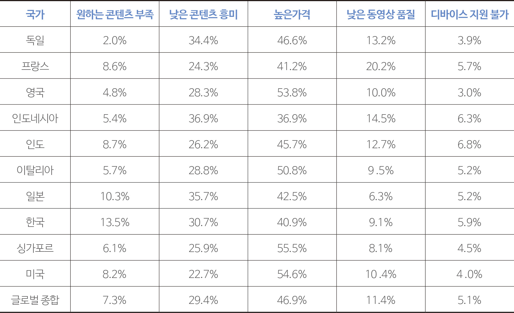
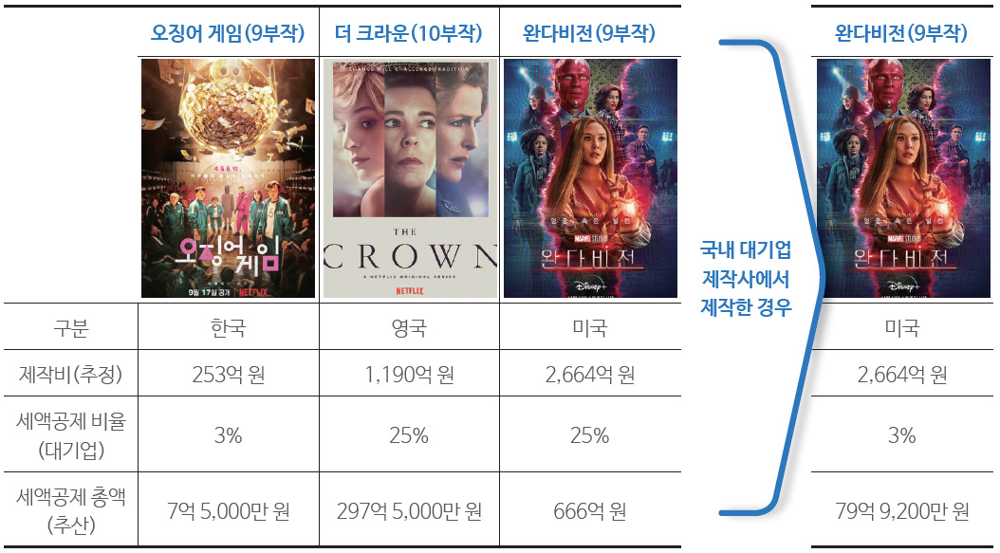

기획 리포트

Featured Report
[ 미디어 산업의 구조 변동과 OTT 경쟁력 원천 ]
OTT 오리지널과 기업 성과김용희
(오픈루트 전문위원)
-
본 고는 OTT 사업자에게 유의미한 영향을 미치는 경쟁력 요소가 무엇인지 파악하고자 하였다. 넷플릭스를 비롯한 OTT 사업자의 경쟁력은 크게 가격과 콘텐츠 경쟁력으로 구분할 수 있는 것으로 파악되었다. OTT의 기업성과는 가입자가 핵심인데 가입자를 늘리기 위해서는 상대적으로 낮은 가격과 높은 품질의 콘텐츠가 중요하다. OTT사업은 극심한 경쟁을 통해 가격을 통한 경쟁력 확보가 어렵기 때문에 이용자들에게 소구될 유의미한 콘텐츠가 결국 OTT 기업성과에 핵심적인 요인으로 나타났다.
- ※ 본 고는 <영상플랫폼에서의 콘텐츠 영향력 분석 및 영상콘텐츠 진흥정책 연구>(2021) 내용을 일부 발췌 및 보완하였습니다.
-
1들어가며OTT의 성장세가 일부 꺾이긴 했지만, 아직도 그 어떤 산업에 비해 빠르게 성장하고 있다. 많은 기관에서 추정한 각종 평가지표는 계속해서 OTT가 큰 폭의 성장세를 나타낼 것으로 보이며, 불안하지만 지속적인 성장이 이어지고 있다. 스태티스타(Statista)에 따르면 이미 2020년에만 21억 명이 OTT를 이용 중이며, 2025년에는 27억 명에 육박할 것으로 예상한다. 중복가입자를 포함하더라도 유료 방송을 대체하고 중추적인 미디어 산업이 되었음을 알 수 있다.
OTT 사업자의 매출액도 빠르게 증가할 것으로 전망되고 있다. 디지털TV 리서치(Digital TV Research)에 따르면, OTT 매출액은 2021년 총 1,350억 달러에서 2027년에는 2,240억 달러까지 증가할 것으로 전망하고 있다. 이중 가장 큰 비중을 차지하는 것은 가입을 기반으로 한 SVOD(Subscription-based Video On Demand) 형태가 될 것이며, 그 뒤를 광고를 기반으로 한 AVOD(Advertising-based Video on Demand)가 따를 것으로 전망된다. 미국을 필두로 한 글로벌 OTT 사업자의 전방위적인 인수합병과 공격적인 투자는 플랫폼의 대형화와 콘텐츠 확보 경쟁이라는 두 가지 차원에서 진행 중이다.
플랫폼 대형화 전략은 힘이 강해지는 콘텐츠 사업자에 대해 협상력(Bargaining Power)을 강화하기 위한 전략으로 풀이된다. 차별화된 콘텐츠 확보가 향후 새로운 미디어 생태계의 지속성을 담보하기 위한 핵심 전략으로 자리를 잡을 것으로 판단된다. 결국 글로벌 OTT의 구조 개편의 핵심은 콘텐츠가 그 중심에 있다고 하겠다.
본 고에서는 오리지널 콘텐츠가 OTT 기업 성과에 미치는 영향에 대해서 알아보고 시사점을 도출하고자 한다. -
2 오리지널 콘텐츠의 플랫폼 경쟁력에 미치는 영향아래 [그림 1]은 미국 시장에서 2017년 1분기에 넷플릭스(Netflix)의 가입자 수가 미국 케이블 사업자의 구독자 수를 넘어선 것을 볼 수 있다. 역사는 2017년 1분기에 시작된 것이다. 2022년에 이르러서는 넷플릭스를 포함한 OTT 서비스 가입자가 전통적인 유료 방송 가입자에 2배에 이를 것으로 추산하였다.
다만, 아시아 시장은 Lee et al(2021)의 연구와 PwC(2022)의 예측에 따르면 전통적인 유료 방송시장의 규모가 2018년 2,477억 달러에서 2025년 2,106억 달러로 감소할 것으로 예상되었으나, 아시아 태평양 시장의 경우 같은 기간 562억 달러에서 588억 달러로 증가할 것으로 예상되었다. 이는 아시아-태평양 시장이 미국 시장과는 다르게 OTT가 대체재가 아닌 보완재로 작동될 것으로 내다봤다.
그림 1미국의 넷플릭스 가입자와 케이블 가입자의 비교(단위: 백만 명)그림 1 미국의 넷플릭스 가입자와 케이블 가입자의 비교">출처: Statista(2021)
그림 2국내 연령별 OTT 이용률 출처: 정보통신정책연구원(2021). OTT(온라인동영상서비스) 유·무료 이용 형태 분석또한, 디바이스 측면에서 전통적인 유료 방송시장의 주요 소비 기기가 대형 TV였다면, OTT는 모바일 기기의 등장과 함께 TV 소비 시간을 빠르게 줄이고 있다. Nie & Hillygus (2002)의 대체 이론에 따르면, 새로운 통신기기와 기술의 등장은 기존의 통신기기와 기술의 사용 시간을 현격히 줄인다는 것에 관해서 연구하였다. OTT 시장의 성장추세를 고려하면 전통적 방송시장의 대체 효과가 나타나고 있다.
출처: 정보통신정책연구원(2021). OTT(온라인동영상서비스) 유·무료 이용 형태 분석또한, 디바이스 측면에서 전통적인 유료 방송시장의 주요 소비 기기가 대형 TV였다면, OTT는 모바일 기기의 등장과 함께 TV 소비 시간을 빠르게 줄이고 있다. Nie & Hillygus (2002)의 대체 이론에 따르면, 새로운 통신기기와 기술의 등장은 기존의 통신기기와 기술의 사용 시간을 현격히 줄인다는 것에 관해서 연구하였다. OTT 시장의 성장추세를 고려하면 전통적 방송시장의 대체 효과가 나타나고 있다.
반면 국내 유료 방송사업자는 MSO, 개별 SO, 위성방송, IPTV 사업자가 경쟁하던 시장에서 IPTV 3사 중심으로 통합되어 OTT와의 경쟁 체제를 마련하고 있다. 특히 통신사가 유료방송을 공급하면서 넷플릭스를 제외한 대부분의 OTT가 아직은 IPTV의 영향력을 넘지 못하는 것이 사실이다. 다만 상대적으로 젊은 계층은 전통적인 유료 방송 보다는 OTT를 통해 콘텐츠를 소비하는 경향이 크게 나타나고 있다.
딜로이트(Deloitte)가 2021년에 조사한 < 디지털 미디어 트렌드 설문조사 > 결과를 살펴보면 “어떤 플랫폼에서 콘텐츠를 소비하는가?”라는 질문에 소셜 미디어를 통해서가 가장 많고 뒤이어 OTT 구독을 통해서 콘텐츠를 소비하는 것으로 나타났다. 특히 미국 시장에서는 평균 4개 이상의 OTT 서비스에 가입하여 콘텐츠를 소비하고 있다.그림 3어떤 플랫폼에서 콘텐츠를 소비하는가?그림 3 어떤 플랫폼에서 콘텐츠를 소비하는가?">출처: Deloitte insights(2021)
그림 4새로운 유료 OTT 서비스를 가입하는 주요한 요소그림 4 새로운 유료 OTT 서비스를 가입하는 주요한 요소">출처: Deloitte insights(2021)
또한, [그림 4]를 살펴보면 “새로운 OTT를 가입하기 위해서 가장 고민하는 요소가 무엇인가?”라는 질문에서 충분히 낮은 요금과 다양한 콘텐츠가 주된 요인으로 나타났다. [그림 3]과 [그림 4]를 종합해 보면 OTT 플랫폼을 선택하는 가장 큰 이유는 결국 가격과 콘텐츠이다. 특히 가격은 플랫폼 간의 경쟁이 심화하여 큰 차이점이 없어진 것을 고려하면, 유의미한 경쟁력의 척도는 결국 콘텐츠의 품질 또는 이용자에게 소구되는 화제성 높은 콘텐츠라고 정리할 수 있다. 현존하는 대부분의 OTT는 가입자를 기반(그것이 구독료든 광고 기반이던 결국 가입자 규모가 중요하다)으로 사업을 영위하기 때문이다.
OTT 플랫폼에서 가입자 확대가 중요한 것은 [그림 5]를 통해서 설명할 수 있다. OTT 플랫폼의 경쟁력을 결정하는 핵심 요소는 가입자당 창출하는 가치를 극대화하고 가입자당 투자 규모를 극소화하는 데 있다. 쉽게 표현하면 적게 쓰고 많이 버는 것이다. 이를 운영효율성이라고 할 수 있으며 통상적으로 규모의 경제라고도 표현한다.그림 5OTT 플랫폼의 경쟁력을 결정하는 요소그림 5 OTT 플랫폼의 경쟁력을 결정하는 요소">출처: 문화체육관광부(2021) 재인용
[그림 5]에서도 볼 수 있듯이 가입자의 규모가 차이가 큰 국내 OTT 플랫폼과 해외 OTT 플랫폼의 경쟁력 차이는 점차 벌어질 수밖에 없다. 전 세계적으로 일정 수준 이상의 가입자가 확보되지 않으면 지속성을 담보할 수 없다. [그림 6]은 넷플릭스의 구독자 수와 매출액의 상관관계를 보여주고 있다. 같은 기울기를 보이는 것을 확인할 수 있다.그림 6넷플릭스의 주요 콘텐츠 공개 시점과 성과그림 6 넷플릭스의 주요 콘텐츠 공개 시점과 성과">출처: 문화체육관광부(2021) 재인용
넷플릭스는 이러한 가입자 확대 전략을 오리지널 콘텐츠 제작 투자로 마련하였다. 가입자 확대를 위해 양질의 콘텐츠를 확보하기 위한 전략으로 대규모 투자를 진행하였다. 2021년 기준으로 1만 5,000편을 공급하고 있으며 매년 1,500편 이상을 공급하고 있다(Rebecca Moody, 2022. 4의 자료를 바탕으로 필자 추정치). 오리지널 콘텐츠가 서비스 가입을 유발하는 가장 중요한 요소 중 하나임을 고려하면 넷플릭스는 콘텐츠 라이브러리를 가입자를 획득하고 지속시키는 핵심으로 판단하고 있음을 알 수 있다.
주요 OTT라고 할 수 있는 넷플릭스와 디즈니+(Disney+)의 경쟁상황을 살펴보면 [그림 7]과 같다. [그림 7]은 가입자 증가율을 나타내는 것인데, 디즈니가+가 처음 출시된 2020년 2분기를 살펴보면 2021년 1분기까지 각자 유의미한 대작들을 출시하면서 경쟁을 진행하는 것을 알 수 있다. 디즈니+ 가입자가 급속하게 증가한 2020년 2분기에서 2020년 4분기까지 넷플릭스와 디즈니+의 가입자 증가량의 기울기가 정반대로 나타난다. 이는 대체재 역할을 하는 것을 알 수 있으며 이용자들이 디즈니+를 넷플릭스의 대체재로 이해했음을 알 수 있다.그림 7넷플릭스와 디즈니+의 오리지널 공개와 가입자 증가량그림 7 넷플릭스와 디즈니+의 오리지널 공개와 가입자 증가량">출처: 문화체육관광부(2021) 재인용
다만 2021년 1분기부터는 유사한 기울기를 보여준다. 서로 유의미한 작품들(넷플릭스는 <오징어 게임>, 디즈니+는 <완다비전(WandaVision)> , <로키(Loki)> 등)을 출시한 이후 가입자 증가세의 기울기가 비슷하게 나타나 2021년 1분기 이후에 본격적으로 중복가입이 활성화된 것으로 판단된다.
정리하면 콘텐츠는 OTT 사업자의 지속성을 담보해주는 가장 중요한 요소다. 즉, 가입자를 유지하게 해주고 수익을 창출해주는 핵심 동인이다. 앞서도 언급했지만, 중복가입자의 증가는 결국 상대적으로 저렴한 가격과 콘텐츠를 다양하게 즐기고 싶은 소비자의 욕구가 반영된 결과다. 이를 반대로 해석하면 중복가입이 늘어날수록 가입 취소나 전환 활동하려는 위협도 커진다는 점이다. 전환비용이 상대적으로 낮기 때문이다. 유료 방송과는 달리 약정이 없고 이동이 자유롭기 때문이다. 달리 말하면, 원하는 콘텐츠가 없으면 (플랫폼에 이용할 수 있는 콘텐츠가 없으면) 구독을 취소하거나 경쟁 사업자로 넘어갈 가능성이 매우 크다.
넷플릭스가 이미 진출한 39개국의 콘텐츠 수, 월간 구독 요금(더하여 콘텐츠 당 구독 요금), IMDB(Internet Movie Database) 평점 등으로 구독자 증가율과의 인과관계를 조사한 결과(문화체육관광부 2021), IMDB 평점과 콘텐츠당 구독 요금이 구독자 증가율에 매우 높은 인과관계를 보이는 것으로 나타났다. 앞서 언급했던 여러 가지 구독 이유 중 품질 높은 콘텐츠를 저렴한 가격에 이용할 수 있는 매체로서 소비자들은 판단하고 있다. 전체 콘텐츠 수라던지, 아카데미상 수상작 수 등이 구독자 증가에 높은 영향을 나타냈는데, 특히 IMDB 평점과 아카데미 수상작 수가 많을수록 구독자의 증가가 큰 폭으로 나타나는 것으로 나타났다. 이는 화제성과 품질이 높은 콘텐츠가 구독자를 이끌고 있다는 결과이다.
이를 뒷받침할 자료로 라임라이트(limelight)에서 2020년 주요 10개국을 대상으로 시행한 OTT 관련 설문조사 결과에서도 확인할 수 있다. OTT 구독 취소의 요인이 무엇인가라는 질문에 대부분이 낮은 콘텐츠 흥미와 높은 가격을 들었다. 가격을 제외하면 결국 가장 중요한 것은 흥미 있는 콘텐츠다. 이미 글로벌 경쟁이 극심해진 OTT 시장에서 가격 조정을 통한 경쟁력 확보는 어렵다. 그렇다면 결국 콘텐츠가 경쟁의 관건이라고 할 수 있다.
아마도 넷플릭스 역시 이러한 환경 속에서 해외 시장 진출을 위해 3C(Contents, Cost, Competition) 전략을 취하는 것으로 판단된다. 콘텐츠 전략은 각국의 문화적 다양성을 반영한 현지화 전략이며, 가격은 각국의 경제 규모, 소득, 경쟁 매체를 고려하여 결정한다. 경쟁 전략은 타 OTT에 비해 혁신적인 콘텐츠를 공급하여 경쟁우위를 확보하는 전략이다.표 1국가별 OTT 구독 취소의 원인표 1 국가별 OTT 구독 취소의 원인">출처: Limelight(2020) The State of Online Video 2020
-
3마치며본 고에서 살펴본 여러 자료에 따르면 OTT 기업의 경쟁력은 가입자이며 가입자가 늘어날수록 지속성이 증가하는 것을 알 수 있다. 가입자를 불러 모으는 가장 분명한 전략은 경쟁력 있는 콘텐츠를 확보하는 것이다. 여기서 오해하지 말아야 할 것은 꼭 엄청난 재원이 투입되는 할리우드식 대작을 의미하는 것은 아니다.
드라마 <이상한 변호사 우영우>와 같이 이용자들에게 공감을 불러일으키고 다른 사람들과 해당 콘텐츠를 이야기할 수 있는 콘텐츠가 더 중요하다. 쿠팡 플레이의 예능 프로그램 <SNL KOREA>와 같은 사례를 참고해 볼 만하다. 다만 이런 콘텐츠들도 기존 한국의 예능이나 드라마보다는 상당히 많은 투자금이 들어갔으며 높은 수준의 영상 품질, VFX 등에 투자하거나, 출연자가 기존에 보여주지 못했던 모습들을 보여주는 등 기존의 제작 틀을 벗어나는 어떤 결과물을 보여줘야 한다. 어찌 됐든 유의미한 투자가 선행되어야 한다.
표 2 국내와 해외의 세액공제 비율표 2 국내와 해외의 세액공제 비율">출처: 김용희(2022) 방송콘텐츠 세제지원 정책의 사회적 가치 재인용
이러한 측면에서 정부 역시 그동안 볼 수 없었던 파격적인 지원제도를 마련해야 한다. 예컨대 현재는 제작비 세액공제라는 세제지원 제도가 있는데 해외와 비교하면 다소 아쉽다. 제작사 규모에 따라 직접 제작비의 3~10% 수준에 법인세를 절감해주는 것이다. 해외는 공제 비율이 25% 수준으로 매우 높다. 디즈니 영화 <완다비전>은 제작비의 20% 내외를 공제해주는 미국 내 세액공제로 약 666억 원을 돌려받은 것으로 추산되나 국내에서 제작했을 시 세액공제 총액은 80억 원 수준에 불과하다.
이는 기업에 수익률을 일부 보장해줌으로써 콘텐츠 투자를 지속해서 할 수 있는 기반을 제공한다. 우리도 미국 수준의 세액공제율 확대가 필요하다. 더불어 OTT 사업자에게도 혜택이 돌아갈 수 있는 콘텐츠 투자 세액공제 제도를 신설해 콘텐츠 제작 의사결정의 시작점인 OTT 플랫폼 사업자에게도 혜택이 돌아가게 해야 한다. 현재 추진 중인 조세특례제한법상의 OTT 지원은 OTT 플랫폼 사업자에게 공급하는 제작사에 한한 것으로 실제 대규모에 콘텐츠를 투자하는 플랫폼 사업자에게는 그 혜택이 크게 돌아가지 않는다.
다른 한편으로 국내 사업자들의 중단기 전략에 대해서 고민해보면 과연 글로벌 OTT와 현재의 상태로 경쟁할 수 있는지 고민해 봐야 한다. 글로벌 OTT의 경우 많게는 수 조 원에 달하는 규모로 콘텐츠에 투자하고 이를 세계 곳곳에 큰 추가 비용 없이 공급하고 있다. 가입자당 한계 투자 비용이 매우 낮다. 이런 환경 속에서 과연 투자 경쟁으로 경쟁력을 확보할 수 있을지 고민해야 한다. 지금과 같이 백화점식 콘텐츠 공급보다는 명확한 대상 군을 겨냥해 전문성을 바탕으로 글로벌 공략과 오리지널 콘텐츠에 투자해야 한다. 즉, “대기업은 더 큰 규모의 투자를, 중소기업은 전문(specialty) OTT 전략을” 취해야 할 것으로 생각된다. 또한 연관산업과의 연계를 통해 B2B 시장에서도 적극 진출해야 한다. -
Reference
- Digital TV Research(2022) Global OTT TV and Video Forecasts. Available online: https://digitaltvresearch.com/product/global-OTT-tv-and-video-forecasts/(접속 : 2022년 7월 20일)
- Richter, F. (June 13, 2017). Netflix Surpasses Major Cable Providers in the U.S. [Digital image]. Retrieved August 04, 2022, from https://www.statista.com/chart/9799/netflix-vs-cable-pay-tv-subscribers/접속: 2022년 7월 20일)
- Lee, S., Lee, S., Joo, H., & Nam, Y.(2021). Examining Factors Influencing Early Paid Over-The-Top Video Streaming Market Growth: A Cross-Country Empirical Study. Sustainability, 13(10), 5702.
- 정보통신정책연구원(2021). OTT(온라인동영상서비스) 유·무료 이용형태 분석.
- 문화체육관광부(2021). 영상플랫폼에서의 콘텐츠 영향력 분석 및 영상콘텐츠 진흥정책 연구
- Limelight(2020) The State of Online Video 2020
- 김용희(2022) 방송콘텐츠 세제지원 정책의 사회적 가치
- Rebecca Moody, Which countries pay the most and least for Netflix? Retrieved August 05, 2022, from https://www.comparitech.com/blog/vpn-privacy/countries-netflix-cost/